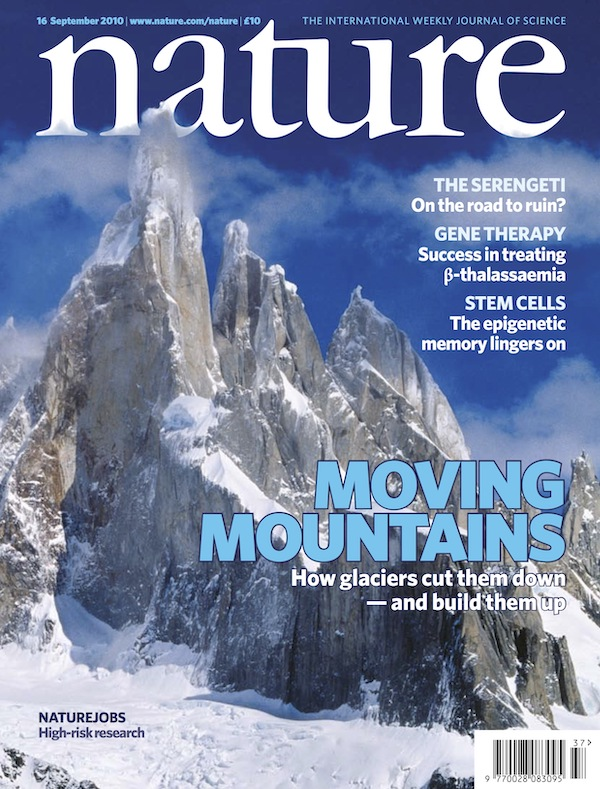

Dr. Stuart N. Thomson Department of Geosciences University of Arizona
Peer-Reviewed Publications
Last Updated: December 10th, 2025
[112] Marschalek, J.W., van der Flierdt, T., Siddoway, C.S., Thomson, S.N., Paxman, G.J.G., Jamieson, S.S.R., Conrad, E., Licht, K.J., Hemming, S.R., Bentley, M.J., Hillenbrand, C.-D., Smith, J.A., Klages, J.P., Fox, M., Pastore, G. & Vermeesch, P. (2025). Reconstructing Eocene Antarctic river drainage from provenance analysis of Amundsen Sea Embayment sediments. Science Advances, v. 11, p. eaea2373, doi: 10.1126/sciadv.aea2373.
[111] Tan, F., Yin, J., Xiao, W., Thomson, S.N., Eizenhöfer, P.R., Chen, W., Wang, T., Huang, H., Wang, Y., Zhao, Y. & De Grave, J. (2025). Meso-Cenozoic episodic uplift and exhumation of the Zhangguangcai Range, Northeast China: insight from low-temperature thermochronology. Geological Society of America, Bulletin, v. 137, p. 5178-5194, doi:10.1130/B38074.1.
[109] Wang, Y., Yin, J., Xiao, W., Sobel, E.R., Thomson, S.N., Wang, Y., He, Z., Chen, W., Cai, K. & De Grave, J. (2025). Multi-stage differential exhumation of the West Junggar and adjacent regions, NW China, revealed by regional low-temperature thermochronology. Earth Science Reviews, v. 267, p. 105154, doi:10.1016/j.earscirev.2025.105154. [108] Xia, W., Yin, J., He, Z., Thomson, S.N., Tan, F. & Wang, Y. (2025). Meso–Cenozoic Tectonic and Thermal History of the Kuqa Depression, Tarim Basin: Insights from Low-Temperature Thermochronology and Vitrinite Reflectance. Journal of Earth Science, doi:10.1007/s12583-025-2027-y.
[104] Kodama, S., Cox, SE., Thomson, S.N., Hemming, S.R., Williams, T., Licht, K.J., Formica, A. & Reiners, P.W. (2024). Constraining the Provenance and Glacial Exhumation of Wilkes Subglacial Basin, Antarctica from Multidating Ice Rafted Dropstones. Geosphere, v. 20, p. 367-388, doi: 10.1130/GES02701.1.
[103] Marschalek, J.W., Blard, P.-H., Sariguyan, E., Ehrmann, W., Hemming, S.R., Thomson, S.N., Hillenbrand, C.-D., Licht, K.J., Tison, J.-L., Ardoin, L., Friiat, F., Allen, C.S., Marrocchi, Y., Siegert, M.J. and Van de Flierdt, T. (2024). Byrd ice core debris constrains the sediment provenance signature of central West Antarctica. Geophysical Research Letters, v.51, p. e2023GL106958, doi: 10.1029/2023GL106958
[102] Marschalek, J.W., Thomson, S.N., Hillenbrand, C.-D., Vermeesch, P., Siddoway, C.S., Carter, A., Nichols, K., Rood, D.H., Venturelli, R., Hammond, S.J.., Wellner, J.S. & Van de Flierdt, T. (2024). Geological Insights from the Newly Discovered Granite of Sif Island between Thwaites and Pine Island Glaciers. Antarctic Science, doi:10.1017/S0954102023000287.
[101] Maresch, W., Pindell, J., Kluge, R., Baumann, A., Villagómez Díaz, D., Brix, M.R., Thomson, S.N., Stanek, K.-P., Schertl, H.-P. & Grafe F. (2024). Three-stage, 70 Myr exhumation of HP-LT rocks on Margarita, Venezuela: Caribbean intra-forearc shear, Grenada Basin rifting, and continental obduction. Journal of South American Earth Sciences, v. 137, p. 104840, doi: 10.1016/j.jsames.2024.104840.
[100] Meng, Y., Yin, J., Xiao, W.J., Thomson, S.N., Wang, Y., Chen, W., Li, D., Wu, W. (2023). Multi-stage uplift and exhumation processes in the eastern Pamir since Late Miocene: Constrained by fission tracks and (U-Th)/He thermochronology. Acta Petrologica Sinica, v. 39(12), p. 3685-3700, doi: 10.18654/1000-0569/2023.12.10. (In Chinese with English Abstract).
[99] Wang, Y., Wang, Y., Yin, J., Thomson, S.N., Xiao, W., He, Z., Chen, W., Cai, K., Wu, M. & Meng, Y. (2023). Mesozoic exhumation of the northern West Junggar, NW China: insights from low-temperature thermochronometers. Tectonophysics, v. 862, p. 229939, doi 10.1016/j.tecto.2023.229939. [98] Whitney, D.L , Delph, J.R., Thomson, S.N., Beck S.L., Brocard, G., Cosca, M.A., Darin, M.H., Kaymakcı, N., Meijers, M.J.M., Okay, A., Rojay, B., Teyssier, C. & Umhoefer, P.J. (2023). Breaking plates: Creation of the East Anatolian fault, the Anatolian plate, and a tectonic escape system. Geology, ,v. 51, p. 5673-677., doi: 10.1130/G51211.1. [97] Yin, J., Wang, Y., Hodges, K.V., Xiao, W., Thomson, S.N., Chen, W., Yuan, C., Sun, M., Cai, K. & Sun, J. (2023). Episodic long-term exhumation of the Tianshan orogenic belt: new insights from multiple low-temperature thermochronometers. Tectonics, v. 42, p. e2022TC007469, doi: 10.1029/2022TC007469. [96] Margirier, A., Strecker, M.R., Reiners, P.W., Thomson, S.N., Casado, I., George, S.W.M. & Alvarado, A. (2022). Late Miocene exhumation of the Western Cordillera, Ecuador, driven by increased coupling between the subducting Carnegie Ridge and the South American continent. Tectonics, v. 42, p. e2022TC007344, doi: 10.1029/2022TC007344.
[95] Tao, Z., Yin, J., Xiao, W., Seltmann, R., Chen, W., Sun, M., Wang, T., Yuan, C., Thomson, S.N., Chen, Y. & Xia, X. (2022). Contrasting styles of peraluminous S-type and I-type granitic magmatism: Identification and implications for the accretionary history of the Chinese South Tianshan. American Journal of Science, v. 322 (2) p. 280-312; doi:10.2475/02.2022.06. [94] Bagdasaryan, T.E., Latyshev, A.V., Thomson, S.N., Veselovskiy, R.V., Zaitsev, V.A. & Marfin, A.E. (2022). Thermal history of the Siberian Traps Thermal history of the Siberian Traps Large Igneous Province revealed by new apatite fission-track and geochronology data from intrusions. Tectonophysics, v. 836, p. 229385, doi:10.1016/j.tecto.2022.229385. [93] Armstrong, E.M., Ault, A.K., Bradbury, K.K., Savage, H.M., Polissar, P.J. & Thomson, S.N. (2022). A multi-proxy approach using zircon (U-Th)/He thermochronometry and biomarker thermal maturity to robustly capture earthquake temperature rise along the Punchbowl Fault, California. Geochemistry, Geophysics, Geosystems. v. 23, e2021GC010291, doi:10.1029/2021GC010291.
[91] Szulc, A.G., Morton, A.C., Whitman, A.G., Hemming, S.R. & Thomson, S.N. (2022). Establishing a provenance framework for sandstones in the Greenland-Norway rift from the composition of moraine/outwash sediments. Geosciences, v. 12, 73, doi: 10.3390/geosciences12020073.
[90] Tao, Z., Yin, J., Sun, M., Wang, T., Yuan, C., Chen, Wen, Huang, H., Seltmann, R., Thomson, S.N. & Chen, Y. (2022). Spatial and temporal variations of geochemical and isotopic compositions of Paleozoic magmatic rocks in the Western Tianshan, NW China: a magmatic response of the Advancing and Retreating Subduction. Journal of Asian Earth Sciences, doi: 10.1016/j.jseaes.2022.105112.
[89] Betka, P.M., Thomson, S.N., Sincavage, R., Zoramthara, C., Lahremruatfela, C., Lang, K.A., Steckler, M.S., Bezbaruah, D., Borgohain, P., Seeber, L. (2021). Provenance shifts during Neogene Brahmaputra Delta progradation tied to coupled climate and tectonic change in the eastern Himalaya. Geochemistry, Geophysics, Geosystems, v. 22, p, e2021GC010026, doi: 10.1029/2021GC010026.
[88] Provow, A.W., Newell, D.L., Dehler, C.M., Ault, A.K., Yonkee, A., Thomson, S.N. & Mahan, K.H. (2021). Revised maximum depositional age for the Ediacaran Browns Hole Formation: implications for western Laurentia Neoproterozoic stratigraphy, Lithosphere, v. 2021 (1): 1757114. doi: 10.2113/2021/1757114.
[86] Clinkscales, C.A, Kapp, P., Thomson, S.N., Wang, H., Laskowski, A.K. & Pullen, A. (2021). Regional Structural Geology and Exhumation History of the Shanxi Rift and Taihangshan, North China, Tectonics, v. 40, p. e2020TC006416, doi: 10.1029/2020TC006416.
[85] Umhoefer, P.J., Thomson, S.N., Lefebvre, C., Cosca, M.A., Teyssier, C. & Whitney, D.L. (2020). Cenozoic tectonic evolution of the Ecemiş fault zone and adjacent basins, central Anatolia, Turkey, during the transition from Arabia-Eurasia collision to escape tectonics. Geosphere, v. 16, p. 1358-1384, doi: 10.1130/GES02255.1.
[84] Sincavage, R., Betka, P.M., Thomson, S.N., Seeber, L., Steckler, M.S. & Zoramthara, C. (2020). Neogene shallow marine and fluvial sediment dispersal, burial, and exhumation in the ancestral Brahmaputra delta: Indo-Burman Ranges, India. Journal of Sedimentary Research, v. 90, p. 1244–1263, doi:10.2110/jsr.2020.60.
[81] McPhee, P.J., van Hinsbergen, D.J.J., Reiners, P.W. & Thomson, S.N. (2019). Thermal history of the western Central Taurides fold-thrust belt: Implications for Cenozoic vertical motions of southern Central Anatolia. Geosphere, v. 15, p. 1927-1942, doi: 10.1130/GES02164.1.
[79] Stickroth, S.F., Carrapa, B., DeCelles, P.G., Gehrels, G.E. & Thomson, S.N. (2019). Tracking the growth of the Himalayan fold-and-thrust belt from lower Miocene foreland basin strata: Dumri Formation, western Nepal. Tectonics, 38, p. 3765-3793, doi: 10.1029/2018TC005390.
[78] McDermott, R.G., Ault, A.K., Cain, J.S. & Thomson, S.N. (2019). Thermotectonic history of the Kluane Ranges and implications for evolution of the eastern Denali fault in southwestern Yukon, Canada. Tectonics, v. 38, p. 2983-3010, doi: 10.1029/2019TC005545.
[76] Veselovskiy, R., Thomson, S.N., Arzamastsev, A., Botsyun, S., Travin, A., Yudin, D., Samsonov, A. & Stepanova, A. (2019). Thermochronology and exhumation history of the northeastern Fennoscandian Shield since 1.9 Ga: evidence from Ar/Ar and apatite fission track data from the Kola Peninsula. Tectonics, v. 38, p. 2317-2337, doi: 10.1029/2018TC005250.
[73] Willner, A., Thomson, S.N., Glodny, J., Massonne, H.-J., Romer, R., van Staal, C.R. & Zagorevski, A. (2019). Zircon fission-track ages from Newfoundland – a proxy for high geothermal gradients and exhumation before opening of the Central Atlantic Ocean. Terra Nova, v. 19, p. 1-10, doi: 10.1111/ter.12361.
[72] Long, S.P., Heizler, M.T., Thomson, S.N., Reiners, P.W. & Fryxell, J.E. (2018). Rapid Oligocene to early Miocene extension along the Grant Range brittle detachment system, Nevada, U.S.A.: insights from multi-part cooling histories of footwall rocks. Tectonics, v. 37, p. 4752-4779, doi: 10.1029/2018TC005073.
[67] Matýsek, D., Jirásek, J., Skupien, P. & Thomson, S.N. (2018). The Žermanice sill: new insights into the mineralogy, petrology, age, and origin of the teschenite association rocks in the Western Carpathians, Czech Republic. International Journal of Earth Sciences, doi: 10.1007/s00531-018-1614-x.
[63] Hansman, R.J., Ring, U., Thomson, S.N., den Brok, B. & Stübner, K. (2017). Late Eocene to Miocene uplift of the Al Hajar Mountains, Oman, recorded by fission track and (U-Th)/He thermochronology. Tectonics, v. 36, p. 3081-3109, doi: 10.1002/2017TC004672.
[60] Ring, U., Gessner, K., Thomson, S.N., Markwitz, V. (2017). Variations in fault-slip data and cooling history reveal corridor of heterogeneous backarc extension in the eastern Aegean Sea region. Tectonophysics, 700-701, p. 108-130, doi: 10.1016/j.tecto.2017.02.013. [59] Carrapa, B., Robert, X., DeCelles, P.G., Orme, D.A., Thomson, S.N. & Schoenbohm, L.M. (2016). Asymmetric exhumation of the Mount Everest region: Implications for the tectono-topographic evolution of the Himalaya. Geology, 44, p. 611-614, doi:10.1130/G37756.1. [58] Ault, A.K., Frenzel, M., Reiners, P.W., Woodcock, N.H. & Thomson, S.N. (2016). Record of paleofluid circulation in faults revealed by hematite (U-Th)/He and apatite fission-track dating: an example from Gower Peninsula fault fissures, Wales. Lithosphere, 8, p. 379-385, doi:10.1130/L522.1.
[57] Murray, K.E., Reiners, P.W. & Thomson, S.N. (2016). Rapid Plio-Pleistocene erosion in the central Colorado Plateau documented by apatite thermochronology from the Henry Mountains. Geology, 44, p. 483-486, doi:10.1130/G37733.1. [56] Veselovskiy, R.V., Thomson, S.N., Arzamastsev, A.A. & Zakharov, V.S. (2015). Apatite fission track thermochronology of Khibina Massif (Kola Peninsula, Russia): Implications for post-Devonian tectonics of the NE Fennoscandia. Tectonophysics, 665, p. 157-163, doi: 10.1016/j.tecto.2015.10.003.
[55] Ault, A.K., Reiners, P.W., Evans, J.P. & Thomson, S.N. (2015). Linking hematite (U-Th)/He dating with the microtextural record of seismicity in the Wasatch fault damage zone, Utah. Geology, 43, p. 771-774, doi:10.1130/G36897.1.
[54] Olivetti, V., Balestrieri, M.L., Rossetti, F., Thomson, S.N., Talarico, F.M. & Zattin, M. (2015). Evidence of a full West Antarctic Ice Sheet back to the early Oligocene: insight from double dating of detrital apatites in Ross Sea sediments. Terra Nova, 27, p. 238-246, doi:10.1111/ter.12153.
[53] Soreghan, G.S., Sweet, D.E., Thomson, S.N., Kaplan, S.A,, Marra, K.R., Balco, G., & Eccles, T.M. (2015). Assessing the Cenozoic and possible pre-Cenozoic role of Unaweep Canyon on the drainage evolution of the northern Colorado Plateau. Geosphere, 11, p. 320-341, doi:10.1130/GES01112.1.
[52] Long, S.P., Thomson, S.N., Reiners, P.W. & DiFiori, R.V. (2015). Synorogenic extension localized by upper-crustal thickening: An example from the Late Cretaceous Nevadaplano. Geology, 43, p. 351-254, doi: 10.1130/G36431.1.
[51] Safipour, R., Carrapa, B., DeCelles, P.G. & Thomson, S.N. (2015). Exhumation of the Precordillera and northern Sierras Pampeanas and along-strike correlation of the Andean orogenic front, northwestern Argentina. In: DeCelles, P.G., Ducea, M.N., Carrapa, B. & Kapp, P.A. (eds.). Geodynamics of a Cordilleran Orogenic System: The Central Andes of Argentina and Northern Chile. Geological Society of America, Memoir, 212, p.181-199, doi:10.1130/2015.1212(10).
[50] Reiners, P.W., Thomson, S.N., Vernon, A., Willett, S.D., Zattin, M., Einhorn, J., Gehrels, G.E., Quade, J., Pearson, D., Murray, K. & Cavazza, W. (2015). Low-temperature thermochronologic trends across the central Andes, 21-28° S. In: DeCelles, P.G., Ducea, M.N., Carrapa, B. & Kapp, P.A. (eds.). Geodynamics of a Cordilleran Orogenic System: The Central Andes of Argentina and Northern Chile. Geological Society of America, Memoir, 212, p. 215–249, doi:10.1130/2015.1212(12).
[49] Willner, A.P., Barr, S.M., Glodny, J., Massonne, H.-J., Sudo, M., Thomson, S.N., van Staal, C.R. & White, C.E. (2015). Effects of fluid flow, cooling and deformation on 40Ar/39Ar, Rb-Sr, and zircon fission track ages of very low- to low-grade metamorphic processes in Avalonian SE Cape Breton Island (Nova Scotia, Canada). Geological Magazine, 152, p. 767-787, doi: 10.1017/S0016756814000508.
[47] Pierce, E.L., Hemming, S.R., Williams, T.W., van de Flierdt, T., Thomson, S.N., Reiners, P.W., Gehrels, G.E., Brachfeld, S.A. & Goldstein, S.L. (2014). A comparison of detrital U-Pb zircon, 40Ar/39Ar hornblende, and 40Ar/39Ar biotite ages in marine sediments off East Antarctica: implications for the geology of subglacial terrains and provenance studies. Earth Science Reviews, 138, p. 156-178, doi:10.1016/j.earscirev.2014.08.010.
[46] Toraman, E., Teyssier, C., Whitney, D.L., Fayon, A.K., Thomson, S.N. & Reiners, P.W. (2014). Low-temperature thermochronologic record of Eocene migmatite dome emplacement and late Cenozoic landscape development, Shuswap core complex, British Columbia. Tectonics, 33, p. 1616–1635, doi:10.1002/2013TC003442.
[45] Schulte, D.O., Ring U., Thomson, S.N., Glodny, J. & Carrad, H. (2014). Two-stage development of the Paparoa Metamorphic Core Complex, West Coast, South Island, New Zealand: Hot continental extension precedes sea-floor spreading by ~20 Myr. Lithosphere, 6, p. 177-194, doi:10.1130/L348.1. [44] Idleman, L., Cosca, M.A., Heizler, M.T., Thomson, S.N., Teyssier, C. & Whitney, D.L. (2014). Tectonic burial and exhumation cycles tracked by muscovite and K-feldspar 40Ar/39Ar thermochronology in a strike-slip fault zone, central Turkey. Tectonophysics, 612-613, p. 134-146, doi:10.1016/j.tecto.2013.12.003.
[42] Gessner, K., Gallardo, L.A., Markwitz, V., Ring, U. & Thomson, S.N. (2013). What caused the denudation of the Menderes Massif: Review of crustal evolution, lithosphere structure, and dynamic topography in southwest Turkey. Gondwana Research, 24, p. 243-274, doi:10.1016/j.gr.2013.01.005.
[40] Tochilin, C.J, Reiners, P.W., Thomson, S.N., Gehrels, G.E., Hemming, S.R. & Pierce, E.L. (2012). Erosional history of the Prydz Bay sector of East Antarctica from detrital apatite and zircon geo- and thermochronology multidating. Geochemistry, Geophysics, Geosystems, 13, Q11015, doi:10.1029/2012GC004364.
[37] Willner, A.P., Massonne, H.-J., Ring, U., Sudo, M. & Thomson, S.N. (2012). P-T evolution and timing of a late Palaeozoic fore-arc system and its heterogeneous Mesozoic overprint in north-central Chile (latitudes 31–32°S). Geological Magazine, 149, p. 177-207,, doi:10.1017/S0016756811000641.
[36] McAtamney, J., Klepeis, K., Mehrtens, C., Thomson, S.N., Betka, P., Rojas, L. & Snyder, S. (2011). Along-strike variability of back arc basin collapse and the initiation of sedimentation in the Magallanes foreland basin, southernmost Andes (53 - 54.5°S). Tectonics, 30, TC5001, doi:10.1029/2010TC002826.
[35] Willner, A.P., Gerdes, A., Massonne, H.-J., Schmidt, A., Sudo, M., Thomson, S.N. & Vujovich, G. (2010). The geodynamics of collision of a microplate (Chilenia) in Devonian times deduced by the pressure–temperature–time evolution within part of a collisional belt (Guarguaraz Complex, W-Argentina). Contributions to Mineralogy and Petrology, 162, p. 303-327, doi:10.1007/s00410-010-0598-8.
[32] Thomson, S.N., Brandon, M.T., Tomkin, J.H., Reiners, P.W., Vásquez, C. & Wilson, N.J. (2010). Glaciation as a destructive and constructive control on mountain building. Nature, 467, p. 313-317, doi:10.1038/nature09365.
Cover Feature
[31] Klepeis, K.A., Betka, P.M., Clarke, G., Fanning, C.M., Hervé, F., Rojas, L., Mpodozis, C., & Thomson, S.N. (2010). Ophiolite obduction and continental underthrusting during Cretaceous closure of the Rocas Verdes basin, Cordillera Darwin, Patagonian Andes. Tectonics, 29, TC3014, doi:10.1029/2009TC002610.
[30] Hervé, F., Fanning, C.M., Pankhurst, R.J., Mpodozis, C., Klepeis, K.A., Calderón, M. & Thomson, S.N. (2010). Detrital zircon SHRIMP U-Pb age study of the Cordillera Darwin Metamorphic Complex: sedimentary sources and implications for the evolution of the Pacific margin of Gondwana. Journal of the Geological Society, 167, p. 555–568, doi:10.1144/0016-76492009-124.
[25] Seward, D., Vanderhaeghe, O., Siebenaller, L., Thomson, S. N., Hibsch, C., Zingg, A., Holzner, P., Ring, U. & Duchéne, S. (2009). Cenozoic tectonic evolution of Naxos Island through a multi-faceted approach of fission-track analysis. In: Ring, U. & Wernicke, B. (eds.). Extending a Continent: Architecture, Rheology and Heat Budget. Geological Society, London, Special Publications, 321, p. 179-196. doi:10.1144/SP321.9.
[24] Ring, U., Thomson, S.N. & Rosenbaum, G. (2009). Timing of the Amorgos detachment system and implications for detachment faulting in the southern Aegean Sea, Greece. In: Ring, U. & Wernicke, B. (eds.). Extending a Continent: Architecture, Rheology and Heat Budget. Geological Society, London, Special Publications, 321, p. 169-177. doi:10.1144/SP321.8. [23] Thomson, S.N., Brichau, S., Ring, U., Glodny, J. & Will, T. (2009). Timing and nature of formation of the Ios metamorphic core complex, southern Cyclades, Greece. In: Ring, U. & Wernicke, B. (eds.). Extending a Continent: Architecture, Rheology and Heat Budget. Geological Society, London, Special Publications, 321, p. 139-167. doi:10.1144/SP321.7.
[21] Ring, U., Glodny, J., Will, T. & Thomson, S.N. (2007b). An Oligocene extrusion wedge of blueschist-facies nappes on Evia, Aegean Sea, Greece: implications for the early exhumation of high-pressure rocks, Journal of the Geological Society, 164, p. 637-652.
[20] Ring, U., Will, T., Glodny, J., Kumerics, C., Gessner, K., Thomson, S.N., Güngör, T., Monié, P., Okrusch, M. & Drüppel, K. (2007a). Early exhumation of high-pressure rocks in extrusion wedges: Cycladic blueschist unit in the eastern Aegean, Greece and Turkey, Tectonics, 26, TC2001, doi:10.1029/2005TC001872.
[17] Willner, A.P., Thomson, S.N., Kröner, A., Wartho, J.A., Wijbrans, J. & Hervé, F. (2005). Time markers for the evolution and exhumation history of a Late Paleozoic paired metamorphic belt in north-central Chile (34°-35°30’S). Journal of Petrology, 46, p. 1835-1858.
[16] Willner, A.P., Hervé, F., Thomson, S.N. & Massonne, H.-J. (2004). Converging P-T paths of Mesozoic HP-LT metamorphic units (Diego de Almagro Island, Southern Chile): evidence for juxtaposition during late shortening of an active continental margin. Mineralogy and Petrology, 81, p. 43-84.
[15] Ring, U., Thomson, S.N. & Bröcker, M. (2003). Fast extension but little exhumation: the Vari detachment in the Cyclades, Greece. Geological Magazine, 140, p. 245-252. [14] Thomson, S.N. & Hervé, F. (2002). New time constraints for metamorphism at the ancestral Pacific Gondwana margin of southern Chile (42°S-52°S). Revista Geológica de Chile, 29, p. 255-271.
[13] Thomson, S.N. (2002). Late Cenozoic geomorphic and tectonic evolution of the Patagonian Andes between latitudes 42°S and 46°S: an appraisal based on fission-track results from the transpressional intra-arc Liquiñe-Ofqui fault zone. Geological Society of America, Bulletin, 114, p. 1159-1173. [12] Brix, M.R., Stöckhert, B., Seidel, E., Theye, T., Thomson, S.N. & Küster, M. (2002). Thermobarometric data from a fossil partial annealing zone in high-pressure - low temperature rocks of eastern and central Crete, Greece. Tectonophysics, 349, p. 309-326.
[11] Thomson, S.N., Hervé, F. & Stöckhert, B. (2001). The Mesozoic-Cenozoic denudation history of the southern Chilean Andes and its correlation to different subduction processes. Tectonics, 20, p. 693-711.
[10] Maresch, W.V., Stöckhert, B., Baumann, A., Kaiser, C., Kluge, R., Krückhans-Lueder, G., Brix, M.R. & Thomson, S.N. (2000). Crustal history and plate tectonic development in the southern Caribbean. Zeitschrift für Angewandte Geologie, Sonderheft SH1, p.283-290.
Downloadable PDF Available
[9] Thomson, S.N. & Zeh, A. (2000). Fission-track thermochronology of the Ruhla Crystalline Complex : new constraints on the post-Variscan thermal evolution of the NW Bohemian Massif. Tectonophysics, 324, p. 17-35.
[7] Mazzoli, S. / Thomson, S.N. (1998). Assessing the nature of tectonic contacts using fission-track thermochronology : an example from the Calabrian Arc, southern Italy (Thomson 1998) - Discussion and Reply. Terra Nova, 10, p. 343-346.
[6] Thomson, S.N. (1998). Assessing the nature of tectonic contacts using fission-track thermochronology : an example from the Calabrian Arc, southern Italy. Terra Nova, 10, p. 32-36. [5] Thomson, S.N., Stöckhert, B & Brix, M.R. (1998). Thermochronology of the high-pressure metamorphic rocks of Crete, Greece: Implications for the speed of tectonic processes. Geology, 26, p. 259-262.
[3] Thomson, S.N. (1994). Fission track analysis of the crystalline basement rocks of the Calabrian Arc, southern Italy: evidence of Oligo-Miocene late-orogenic extension and erosion. Tectonophysics, 238, p. 331-352.